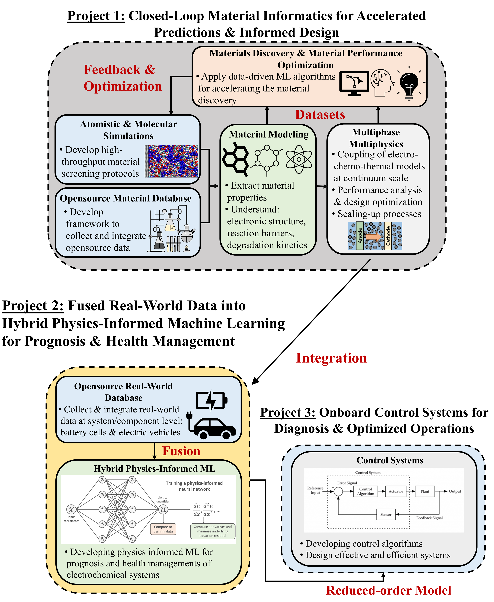
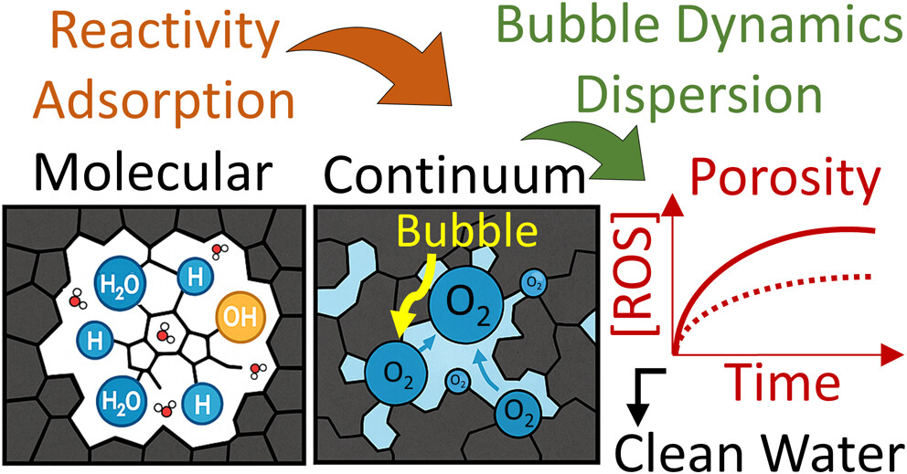
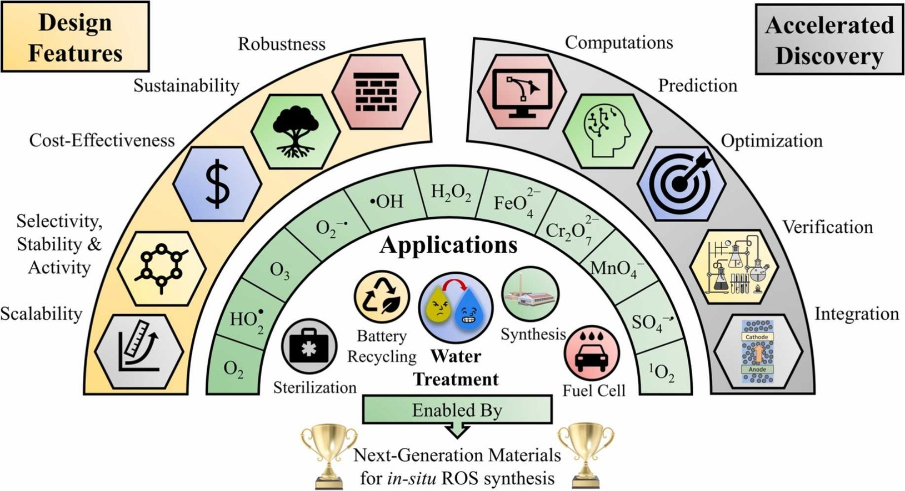
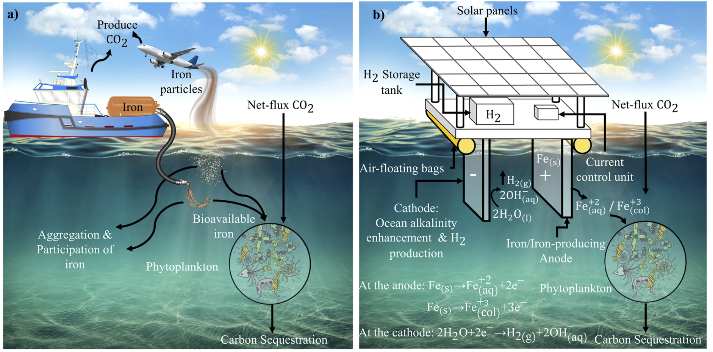
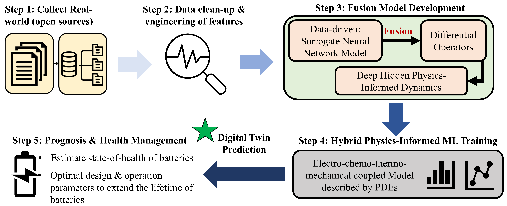
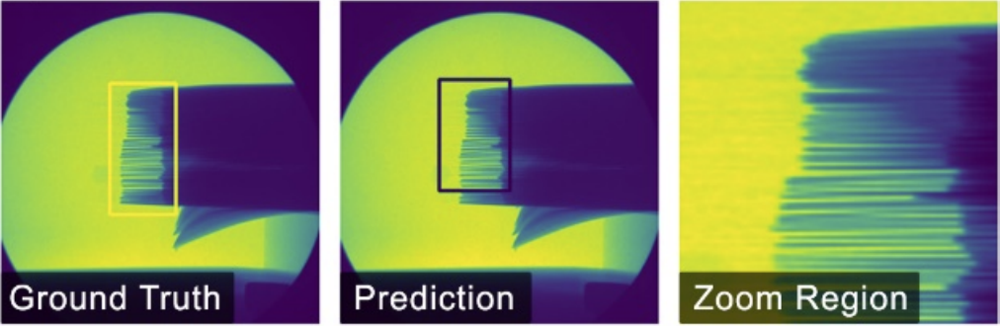

From Molecules and Materials to Multiscale Energy System Integration and Deployment
Multiscale Simulation · Thermal-Fluid & Electrochemical Systems · Machine Learning
Integrating molecular simulation, thermal-fluid modeling, electrochemistry, and physics-informed AI to
accelerate the design of next-generation batteries, electrochemical water treatment systems, and
ocean-based CO₂ removal technologies.
Bridging thermal-fluid science, electrochemistry, scalable computation, and engineering innovation
Current Position
Materials Informatics Scientist at Solid Power Operating Inc., leading AI-driven
digital twins and multiscale simulations for next-generation solid-state and lithium-ion batteries.
Previously, I worked at Nissan’s Advanced Technology Center – Silicon Valley on materials informatics
and battery management systems for electric vehicles, and at Technip on
thermal-fluid and process engineering for large-scale energy systems.
Academic Background
PhD in Mechanical & Industrial Engineering and MSc in Mechanical Engineering from Northeastern University,
where my dissertation developed multiscale computational frameworks for carbon- and iron-based materials in
electrochemical water treatment and ocean-based CO₂ removal. My training is rooted in
thermal-fluid sciences and electrochemical engineering, from gas-evolving bubble
hydrodynamics to multiphase reactive flow modeling. Earlier work at the University of Illinois
at Urbana–Champaign and Jordan University of Science & Technology focused on nanofluidics, interfacial transport,
and 2D materials including graphene biosensors.
Research Vision
My research integrates multiscale physics-based modeling, thermal-fluid science, machine learning,
and materials informatics to solve critical challenges in energy storage, water treatment,
and climate technologies. I develop computational frameworks that connect molecular-scale phenomena
to device- and system-level performance, enabling predictive design and optimization—from ocean
carbon removal reactors to solid-state batteries.
Industry & research experience
~5+ years of industrial R&D across automotive, batteries, energy, and computational science
Multiscale ML and computation for electrochemical materials, batteries, reactors, and thermal-fluid systems
Atomistic Scale
MD, DFT, force fields
Microstructure
Porous media, interfaces
Device/Cell
Batteries, sensors, reactors
System Level
Packs, grids, deployment
Atomistic View: Molecular Dynamics of Confined Fluids
Short molecular dynamics simulation showing how water and ions move at the nanoscale
in confined geometries. These atomistic insights feed directly into microstructure- and
reactor-scale models for electrochemical systems and nanofluidic devices.
Graphical overview of my research: (a) multiscale electrochemical cell modeling from quantum to continuum scales,
(b) design features and applications of reactive oxygen species systems, and (c) closed-loop materials informatics
connected to energy storage devices such as post-lithium and redox-flow batteries.

Three interconnected research thrusts: (1) closed-loop materials informatics for accelerated predictions and informed design,
(2) fusion of real-world data into hybrid physics-informed ML for prognosis and health management, and
(3) onboard control systems using reduced-order models for diagnosis and optimized operation.
Energy Storage & Batteries
Developing digital twins and physics-informed ML for safe, fast-charging batteries. Integrating
electro-chemo-mechanical and thermal-fluid modeling with real-time control strategies
for solid-state and advanced lithium batteries.
Digital twins for battery management
Thermal-mechanical failure prediction
Safe fast-charging protocols
ML-accelerated design maps
Collaboration opportunities: AI-enabled battery digital twins, fast-charging protocol design, and
thermal-mechanical safety modeling with OEMs, suppliers, and research labs.
Materials Informatics
Linking processing, microstructure, and performance in electrochemical materials through
machine learning and statistical modeling. I build image-based and graph-based
surrogates, regression models, and optimization frameworks that translate tomography and simulation
data into actionable design rules for porous carbons, solid electrolytes, and composite electrodes.
Structure–property relationships from images, graphs, and simulations
Neural-network surrogates (MLPs, CNNs, GNNs) for microstructure-aware properties
Multi-objective optimization (Pareto fronts, trade-offs in performance/robustness)
Bayesian optimization to navigate large processing–structure design spaces
Collaboration opportunities: tomography-driven microstructure analysis, regression and optimization
pipelines for materials design, and Bayesian optimization workflows for solid electrolytes and
composite electrodes.
Electrochemical Water Treatment
Multiscale modeling of granular activated carbon (GAC) electrodes for reactive oxygen species
generation. Connecting molecular-scale water adsorption to reactor-level performance and
pollutant removal efficiency in multiphase, flow-through systems.
ROS generation mechanisms
Porous electrode design
Flow-through reactor optimization
Scale-up and MRV frameworks
Collaboration opportunities: scaling GAC-based reactors, integrating modeling with pilot systems,
and developing MRV and techno-economic frameworks for decentralized treatment.
CO₂ Sequestration & Climate
Electrochemical strategies coupling iron chemistry, alkalinity enhancement, and carbon capture.
Developing reactor designs and MRV tools for ocean iron fertilization and carbon dioxide removal
technologies.
Ocean alkalinity enhancement
Iron-based electrochemical CDR
Monitoring & verification (MRV)
Techno-economic analysis
Collaboration opportunities: marine CDR consortia, model-development for field pilots, and
independent MRV for electrochemical ocean iron fertilization and alkalinity enhancement.
Nanofluidics & 2D Materials
Transport in nanoscale channels and heterostructures, including electroosmotic coupling and
high-sensitivity biosensors based on deformed graphene and MoS₂ for nucleic acid detection and
biosensing applications.
Electroosmotic transport
Graphene field-effect biosensors
Nanoscale hydrodynamics
2D heterostructure devices
Collaboration opportunities: joint projects on graphene/TMDC sensors, flexible electronics, and
nanofluidic transport simulations for biosensing or separation technologies.
Machine Learning & AI
Designing neural-network and physics-informed ML workflows for materials discovery,
process control, and design space exploration. My work combines PINNs, neural operators, classical
regression, and Bayesian/multi-objective optimization to build reliable surrogates
for complex multiphysics systems.
Neural networks for surrogate modeling and digital twins
Physics-informed neural networks (PINNs) & neural operators for PDE-based systems
Uncertainty-aware regression and calibration (e.g., ensembles, Gaussian processes)
Bayesian optimization & active learning for experiments and simulations
Multi-objective optimization and Pareto analysis for competing design targets
Collaboration opportunities: physics-informed ML for materials and energy systems, Bayesian and
multi-objective optimization for process design, and open-source tools for PINNs, regression,
and neural-operator-based surrogates.
Research Philosophy
Building computational frameworks that integrate multiscale physics-based modeling,
thermal-fluid science, and data-driven machine learning to enable both
forward performance prediction and inverse, target-driven design of electrochemical materials, devices,
and processes for sustainable energy and environmental applications — from ROS-generating activated
carbon electrodes and ocean iron fertilization reactors to AI-designed solid-state batteries.
Mechanistic
Physics-first approach
Data-Driven
ML-accelerated design
Multi-Scale
Atoms to systems
Validated
Experiment-informed
Electrochemical Water Treatment & Reactive Oxygen Species
Multiscale models link water adsorption and redox chemistry in granular activated carbon to
continuum transport, bubble dynamics, and reactor-scale ROS generation for efficient pollutant removal.

Multiscale view of electrochemical water treatment: molecular adsorption and reactivity,
continuum transport and bubble dynamics in porous carbon, and reactor-scale porosity effects on ROS generation.

Design space for reactive oxygen species systems, connecting design features and materials chemistries
with applications in water treatment, sterilization, energy storage, and fuel cells.
Bubble Dynamics in Gas-Evolving Electrochemical Cells
Multiphase simulations of bubble growth and detachment help quantify how gas evolution
reshapes local hydrodynamics, transport, and reactive surface area in electrochemical
water treatment reactors.
Multi-Bubble Growth and Interaction
Coupled level set–VOF simulation of many bubbles nucleating and growing on an
electrode surface. The clip highlights how neighboring bubbles interact, coalesce,
and restructure the local flow field in gas-evolving electrochemical systems.
3D Gas-Evolving Bubble Simulation
Three-dimensional view of a single gas bubble growing and detaching from an
electrode. This type of model is used to study bubble shape, detachment dynamics,
and the resulting changes in interfacial area and mass transport.
Ocean-Based CO₂ Removal & Marine Electrochemistry
Electrochemical platforms couple iron fertilization, alkalinity enhancement, and hydrogen production
to enable controlled, monitorable marine carbon dioxide removal.

Concepts for electrochemical ocean iron fertilization and ocean alkalinity enhancement:
(a) mobile systems that release bioavailable iron into the upper ocean, and
(b) floating electrochemical platforms that generate alkalinity and hydrogen while enhancing long-term CO₂ sequestration.
Hybrid Physics-Informed Machine Learning & Digital Twins
Real-world data and physics-based models are fused into hybrid ML frameworks that learn hidden dynamics,
accelerate PDE solvers, and enable prognosis and health management for electrochemical systems.

Hybrid physics-informed ML pipeline: collecting real-world data, feature engineering, fusion of
data-driven surrogates and differential operators, physics-informed training with PDE models,
and deployment for digital-twin prediction and health management.

Example application of hybrid surrogates: ML models predicting complex battery imaging outputs
(ground truth vs prediction) to accelerate diagnostics and design.
Physics-Informed Control for Battery Safety & BMS
Reduced-order thermal and electrochemical models are embedded inside differential physics-informed controllers
to compute safe, optimal control actions for batteries and energy storage systems.
Differential physics-informed control: (1) reduced-order equivalent circuit and thermal models,
(2) PINN-based controller that maps states to optimal responses with feedback, and
(3) deployment in energy storage applications for battery safety and secure fast charging.
Selected Publications
High-impact research spanning electrochemistry, thermal-fluid science, materials, and computational methods
Amir Taqieddin, Stephanie Sarrouf, Muhammad Fahad Ehsan, Akram N. Alshawabkeh
Multiscale Insights into Structure–Porosity Interplay and Water Adsorption in Granular Activated Carbon for
Enhanced Electrochemical Water Treatment
Maria del Mar Cerrillo Gonzalez, Amir Taqieddin, Stephanie Sarrouf, Nima Sakhaee, Juan Manuel Paz-García, Akram N. Alshawabkeh, Muhammad Fahad Ehsan
Enhancing H₂O₂ Generation Using Activated Carbon Electrocatalyst Cathode: Experimental and
Computational Insights on Current, Cathode Design, and Reactor Configuration
Amir Taqieddin, Stephanie Sarrouf, Muhammad Fahad Ehsan, Akram N. Alshawabkeh
New Insights on Designing the Next-Generation Materials for Electrochemical Synthesis of Reactive Oxidative
Species Towards Efficient and Scalable Water Treatment: A Review and Perspectives
Journal of Environmental Chemical Engineering, 2023
Intellectual property spanning electrochemical water treatment, ocean-based CO₂ removal, and physics-informed control for advanced battery and energy systems.
I am an inventor or co-inventor on 3 patents / patent applications that are publicly
visible and 6 additional filings in progress. The work spans ocean-based carbon dioxide
removal, electrochemical water treatment, and AI-enabled battery management systems.
Electrochemical Water Treatment & ROS-Generating Electrodes
Invention and patent activity around flow-through electrochemical reactors and
granular activated carbon electrodes that generate reactive oxygen species in situ
for degradation of organic contaminants and emerging pollutants. These inventions build directly on my
multiscale modeling and experimental work on ROS-generating electrodes and reactor design.
Themes: electro-Fenton(-like) processes, porous electrode engineering, high-throughput flow reactors,
and scalable architectures for decentralized water treatment.
Ocean-Based CO₂ Removal & Marine Electrochemistry
Patented concepts that integrate electrochemical ocean iron fertilization,
alkalinity enhancement, and hydrogen co-production, enabling controlled
nutrient release and quantifiable, durable marine CO₂ sequestration. This includes offshore platforms
that electrochemically generate bioavailable iron and alkalinity in seawater.
Themes: marine carbon dioxide removal (mCDR), electrochemical iron cycling, alkalinity management,
and coupled MRV (monitoring, reporting, verification) frameworks.
Battery Management & Physics-Informed Control
Patents on vehicle battery management systems and differential physics networks
that combine physics-based battery models with neural networks to compute optimal control targets for
electric vehicles. These systems enable safer operation, extended lifetime, and improved fast-charging
by leveraging physics-informed AI inside battery management controllers.
Themes: physics-informed ML, EV battery management, fast-charging, and integrated control of thermal,
electrochemical, and degradation processes.
Selected Published Patents & Applications
Offshore Mobile Platform for Electrochemical Ocean Iron Fertilization and Hydrogen Gas Generation
US 2023/0183633 A1 · Published 2023
Inventors: Amir Taqieddin, Akram N. Alshawabkeh, Kenneth O. Buesseler
Concept: a self-operating offshore electrochemical platform that releases bioavailable iron and
alkalinity into seawater while co-producing hydrogen gas, enabling controlled ocean iron fertilization
and enhanced CO₂ sequestration.
Inventors: Amir Taqieddin, Masanobu Uchimura, Balachandran Gadaguntla Radhakrishnan, Shigemasa Kuwata
Concept: a differential-physics-based neural network stored on a non-transitory computer-readable
medium that estimates battery degradation and other state variables, then backpropagates to compute
optimal control parameters for battery operation.
Inventors: Amir Taqieddin, Masanobu Uchimura, Balachandran Gadaguntla Radhakrishnan, Shigemasa Kuwata
Concept: a battery management system for vehicles whose controller incorporates a differential physics
network to map measured battery states to target control values (e.g., voltage, current, temperature),
enabling safer and more efficient EV battery operation.
Public-facing talks, explainers, and coverage of my work in batteries, water, and climate technologies.
These resources highlight how multiscale computation and AI translate into real-world systems, from
ocean-based CO₂ sequestration and electrochemical water treatment to nanofluidic sensors and battery
technology.
Featured Videos & Talks
Electrochemical Ocean Iron Fertilization & Alkalinity Enhancement
Animated explainer of a self-operating electrochemical system that combines ocean iron fertilization,
alkalinity enhancement, and hydrogen production for durable CO₂ sequestration.
Multiscale Simulations of Electronic and Fluidic Nanoscale Systems
Blue Waters Symposium talk on multiscale simulations for nanofluidics and electronic transport, using
petascale supercomputing to connect atomistic models and continuum descriptions.
AI in Battery Technology: From Laboratory Testing to Field Applications
Invited presentation in Cambridge EnerTech’s AI for Energy Storage program at the
International Battery Seminar, highlighting physics-informed ML and digital twins for battery
development and deployment.
A few short clips illustrating how multiscale simulations capture dynamics from
nanoscale transport and crumpling in 2D materials to multiphase bubble and vortex
flows in electrochemical systems.
Single Bubble Growth Near an Electrode
High-resolution simulation of a single gas bubble forming and growing on an
electrochemical surface. This type of model is used to validate bubble growth
laws and benchmark continuum descriptions of gas-evolving systems.
Vortex Structures in Reactive Flows
Visualization of vortex motion and flow structures that emerge in reactive,
forced flows. Understanding these coherent structures is key for mixing,
transport, and reactor design in electrochemical and thermal-fluid systems.
Crumpling Graphene for Ultrasensitive Sensing
Graphene crumpling visualization linked to deformed-channel biosensors.
Controlled crumpling enables bandstructure tuning and enhanced sensitivity in
graphene-based nucleic acid detectors and flexible 2D-material devices.
Media Coverage
“Engineer the Ocean” Climate Story (WBUR/NPR)
Featured in a WBUR climate segment on ocean iron enrichment, demonstrating a prototype floating
electrochemical device that delivers a steady dose of iron for marine carbon removal experiments.
Dissertation and trainee spotlight on multiscale computational design of carbon and iron materials for
electrochemical water treatment and the transition to industry roles in battery R&D.
Coverage of the Nature Communications work on deformed graphene biosensors for
ultrasensitive nucleic acid detection, including commentary on bandgap engineering and flexible electronics.
Highlighted in carbon-removal community summaries discussing electrochemical ocean iron fertilization
and alkalinity enhancement as a combined marine carbon dioxide removal pathway.
Committed to excellence in education and fostering the next generation of researchers
Teaching Vision
My teaching connects core mechanical and materials engineering—thermal-fluids, heat transfer,
energy storage, and materials science—with modern data and machine learning (ML) tools.
Students link structure, processing, and performance from microstructure and constitutive behavior to
device-level response in battery packs, thermal networks, and electrochemical reactors.
AI in my courses is always physics-informed, reproducible, and ethical, organized around a
practical cycle: Concept → Model → Code → Experiment → Communication.
Backward Design & Mastery
I use backward design with clear outcomes in conceptual, mathematical, computational, and experimental
skills. Low-stakes retrieval and specifications-based grading keep rigor while letting students iterate
and improve.
Physics-Based Modeling with Data
Students derive governing equations (e.g., Navier–Stokes, transport in porous media), build simulators
from pore to device scale, and construct physics-aware surrogates (PINNs, Gaussian processes) that respect
constraints and units.
Active & Inclusive Classrooms
Short mini-lectures alternate with think–pair–share, live coding, and whiteboard derivations.
Structured teams and multiple modalities (analytical, computational, visual) support participation
from a broad range of learners.
Inclusive & Accessible Learning
I commit to inclusive practices: accessible materials, flexible demonstrations (visual, analytical, and
computational), transparent rubrics, and team norms that prevent inequitable task allocation. I routinely
solicit anonymous feedback, adjust pacing and supports, and integrate societal context—safety, environmental
impact, and ethics in AI-enabled design and control of mechanical and materials systems.
Teaching Experience
Mentored graduate and undergraduate students in computational methods, thermal-fluid science, and electrochemistry
Delivered research seminars on multiscale modeling, ML for materials, and ocean-based CDR
Supervised student projects in nanofluidics, battery modeling, and data-driven design
Guest lectures on transport phenomena and electrochemical engineering
Core Course Interests
Thermodynamics, Fluid Mechanics, Heat Transfer
Transport Phenomena & Energy Systems
Numerical Methods & Scientific Computing
Electrochemical Engineering
Energy Systems Design
Advanced/Elective Courses
Materials Informatics & ML for Design
Multiscale Modeling of Electrochemical Systems
Computational Transport in Energy Devices
Nanofluidics & 2D Materials
Physics-Informed ML for Thermo-Fluid & Energy Systems
Open to research collaborations, speaking opportunities, and academic & industry partnerships
Email
taqieddin.a [at] northeastern [dot] edu
To reduce spam, I avoid printing a clickable email address in plain text. You can reach me
via the collaboration button or the email link in the footer.


.png)